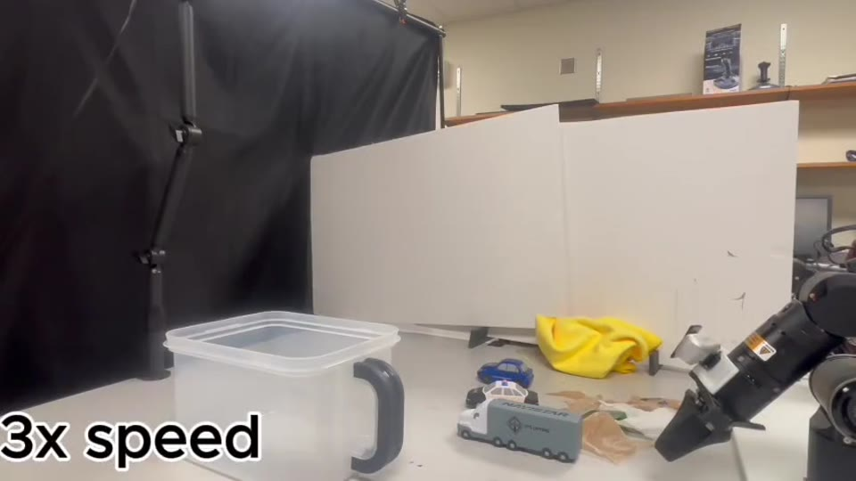

UniPred.
Unifying Deep Predicate Invention
with Pre-trained Foundation Models
Learn the concepts. Connect them to actions. Plan beyond a single step.
* Equal contribution. † Corresponding author.
Carnegie Mellon · Michigan · Pittsburgh · Centaur AI · Princeton
Author affiliations
1 Robotics Institute, Carnegie Mellon University, Pittsburgh, PA, USA
2 Computer Science and Engineering Division, University of Michigan
3 Department of Computer Science, University of Pittsburgh
4 Centaur AI Institute
5 Department of Electrical and Computer Engineering, Princeton University
6 Department of Civil and Environmental Engineering, University of Michigan
From pixels to predicates to plans. Foundation-model priors and robot experience meet in one learning loop.
Explore the methodThe question
What must a robot
understand to act?
Before a robot can clean a table, it needs to know more than where the objects are. Is the gripper empty? Is a toy still on the table? Is the table clean?
These concepts are predicates: the bridge between continuous visual observations and a discrete plan. UniPred learns that bridge by combining an LLM’s high-level hypotheses with feedback from robot demonstrations.
Read the abstract01 Inside UniPred
A hypothesis becomes
a grounded concept.
Not every plausible concept is a useful predicate. Data tells us which ones actually explain what the robot does.
Start with an informed guess.
An LLM proposes predicates and hypotheses about how actions change them. Demonstration transitions turn these effect hypotheses into supervision for visual predicate learning.
Pick(toy) → Holding(robot, toy)
 State 0
State 0
 State 1
State 1
 State 2 · holding
State 2 · holding
 State 3
State 3

OnTable(toy)HandEmpty(robot)Illustrative symbolic state
↶ Re-observe after each controller; replan when needed.
An interactive interpretation of the paper’s pipeline and bilevel learning figures. Point motion is schematic; state images come from the paper. Predicates support planning over a provided library of low-level controllers.
High-level priorLLMs propose what actions should change.
Low-level evidenceDemonstrations determine what predicates can learn.
A planning interfaceSelected predicates connect perception to reusable skills.
02 Real robots, long horizons
One framework.
Different things to get done.
A plan is only useful if it survives contact with a real scene. Watch UniPred connect learned concepts to sequences of robot skills.
Clear the toys.
Then clean the table.
The robot picks up three toy vehicles and places them in the box, then uses a towel to wipe the tabletop. The task requires coordinating object transfers and wiping, rather than repeating a single motion.
- Goal
- Toys stored; tabletop cleaned.
- What to watch
- The transition from picking and placing toys to using the towel.
Original footage · displayed at 3× speed
in the manuscript
03 When the first attempt fails
Observe again.
Make a new plan.
After each controller finishes, UniPred re-grounds the observed scene into predicates. If the action has failed, the updated symbolic state can support replanning.
THE FEEDBACK LOOP
The world changes.
The plan should too.
-
01
Execute a skill
A controller attempts the planned action.
-
02
Check the resulting state
New visual observations are classified into ground predicates.
-
03
Replan from what happened
The next action follows the updated state, rather than assuming success.
A missed pick is not the end.
The toy remains on the tabletop after an unsuccessful grasp. Subsequent picking attempts recover the object transfer. Original footage at 3× speed.
Retry the prerequisite skill.
The robot retries grasping the yellow towel before continuing to wipe. Recovery depends on the object remaining observable and reachable by the available skills. Original footage at 3× speed.
04 Understanding the limits
Replanning helps.
It does not solve everything.
A new symbolic plan still depends on accurate perception and successful low-level execution. These unsuccessful runs show where that chain can break.
Was the object really picked?
An unsuccessful pick-and-place sequence leaves the task unfinished.
Replanning needs a correct symbolic state. A misclassified predicate can make the next controller inappropriate for the actual scene.
A plan cannot guarantee a grasp.
A toy manipulation attempt fails to complete the intended transfer.
The planner selects from existing skills. Grasp and placement errors can persist even with a valid plan; planning does not improve the motor skill itself.
Trying again has its limits.
Towel manipulation and wiping do not bring this run to a successful completion.
Contact, actuation, and perception remain limiting factors. Repeating an available action may still fail to produce the physical state the task requires.
The explanations describe failure mechanisms discussed in the paper, not a diagnosis from per-frame execution logs. The paper identifies out-of-distribution predicate errors and perception or actuation limitations as remaining challenges.
05 The research
The full picture.
Method, experiments, ablations,
and what remains open.
Current manuscript · 11 authors
Published arXiv version ↗
Abstract
Long-horizon robotic tasks are hard due to continuous state-action spaces and sparse feedback. Symbolic world models help by decomposing tasks into discrete predicates that capture object properties and relations. Existing methods learn predicates either top-down, by prompting foundation models without data grounding, or bottom-up, from demonstrations without high-level priors. We introduce UniPred, a bilevel learning framework that unifies both. UniPred uses large language models (LLMs) to propose predicate effect distributions that supervise neural predicate learning from low-level data, while learned feedback iteratively refines the LLM hypotheses. Leveraging strong visual foundation model features, UniPred learns robust predicate classifiers in cluttered scenes. We further propose a predicate evaluation method that supports symbolic models beyond STRIPS assumptions. Across five simulated and two real-robot domains, UniPred achieves 2–4× higher success rates than top-down methods and 3–4× faster learning than bottom-up approaches, advancing scalable and flexible symbolic world modeling for robotics.
Cite the arXiv preprint
Citation metadata below corresponds to the published arXiv version.
@misc{wang2025unifyingdeeppredicateinvention,
title={Unifying Deep Predicate Invention with Pre-trained Foundation Models},
author={Qianwei Wang and Bowen Li and Zhanpeng Luo and Yifan Xu and Alexander Gray and Tom Silver and Sebastian Scherer and Katia Sycara and Yaqi Xie},
year={2025},
eprint={2512.17992},
archivePrefix={arXiv},
primaryClass={cs.RO},
url={https://arxiv.org/abs/2512.17992}
}